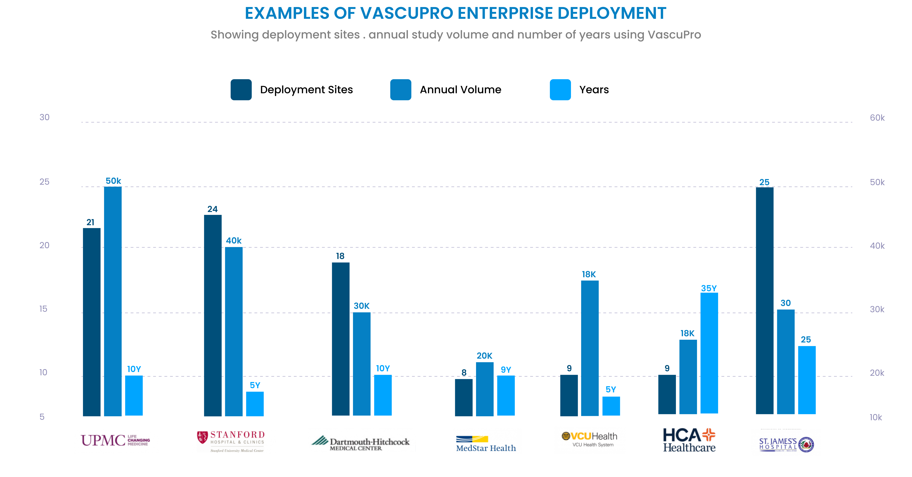

The Ultimate Vascular Lab Reporting Software!
- VascuPro™ is the gold standard vascular lab reporting software. For over 25 years, thousands of non-invasive vascular lab reports are completed on VascuPro™ by vascular technologists in many prestigious health institutes in North America and Europe every day.
- VascuPro™ seamlessly interfaces with imaging and physiologic vascular lab diagnostic modalities and displays images and measurements. Study images and measurements are automatically transferred to user-defined reports to facilitate easy interpretation of study findings. The images received from diagnostic modalities are never reconstructed and displayed unaltered. VascuPro viewer does not qualify as a medical device.
- VascuPro™ acquires DICOM SR standards and user-defined custom measurements from DICOM SR-enabled diagnostic modalities.
- Instant and automatic comparison of study findings with prior studies to monitor disease progress.
- Provides dynamic documentation of grafts and/or stents in any combination of different patients.
- VascuPro™ interfaces with EPIC, Cerner, Meditech, Allscripts, and all EMR systems that support HL7 standards.
- VascuPro™ interfaces with all PACS systems that support DICOM Q/R standards.
- Integrated interactive study drawings, training module, advanced quality control & IAC accreditation reports, patient follow-up, and automatic reminders of late studies.
- More info? Click on the brochure to see additional features. Contact us to schedule a web demo.
Reliability
- The greatest testament to our clients’ satisfaction with our products and services is their decision to expand our software deployment to additional sites after their initial experience. Enterprise robustness, complete acquisition of study measurements, seamless integration with multiple EMR/PACS/RIS systems, and highly responsive support services are all key factors that differentiate VascuPro™ and Consensus support services from any other available system on the market.
Insights
